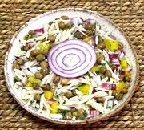

|
Pigeon Pea & Orzo SaladPuerto Rico - Ensalada de Gandules y Orzo | ||||
| Makes: Effort: Sched: DoAhead: |
2-3/4 # ** 1-1/2 hrs Yes |
This is a simple, but interesting attractive and delicious pasta salad that is excellent for parties. It will not wilt or fade, and is easily spooned for buffet service. Unlike many pasta salads, it is dairy free. | |||
|
|
1 15 oz 6 7 1/4 ------- 1/4 1/2 1/2 1 -------- |
c can oz oz c ---- c c T t ----- |
Orzo (1) Pigeon Peas. gn (2) Onion,red Bell Pepper, yellow Cilantro -- Dressing Cider Vinegar Olive Oil ExtV Salt Pepper, black --------- |
Make - (1-1/2 hrs - 17 min work)
|